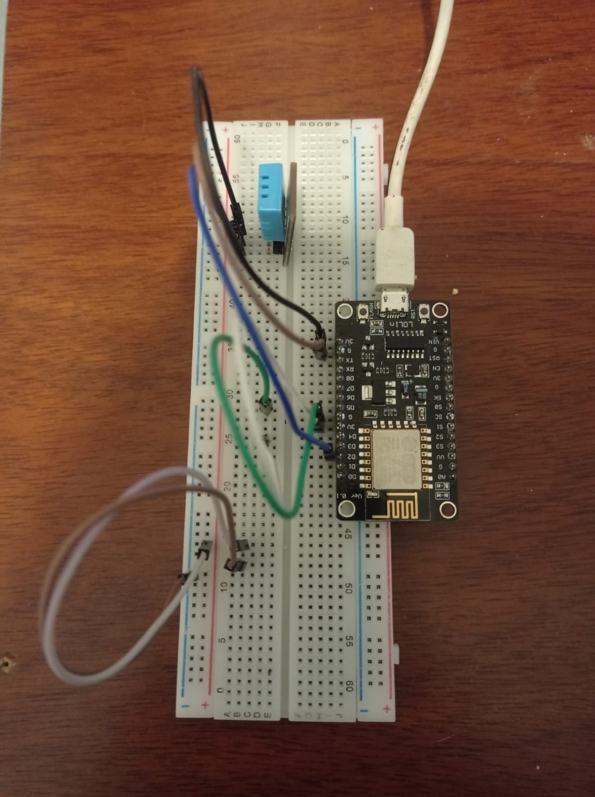

Este es un pequeño programa desarollador por mi, y se pidió poder conectar la placa ESP8266 a cualquier sensor y poder obtener la data, luego mostrarlo o directamente estudiarlo , en este trabajo se muestra la temperatura y humedad actual del ambiente, primeramente ah sido construido en un protoboard alimentado por un cable USB de la laptop , después este fue programado mediante “Arduino” con adaptación para esta placa , después se creo la pi POST con lenguaje de programación PHP , para así poder conectar el Arduino con una base de datos y ser leída desde el fronted que ene este caso se usó ANGULAR , si bien es un proyecto pequeño, este mismo tiene posibilidades abundantes para el tema de control de además que se viene tocando temas de IOT.
{{dia}}
/
{{hora1}}
:
{{hora2}}
{{humidity}}°
{{temperatura}}°
REGISTROS ALTOS
| # | Id | Humedad | Temperatura |
|---|---|---|---|
| 1 | 1375 | 94° | 21.50° |
| 2 | 1520 | 97° | 21.40° |
| 3 | 1820 | 99° | 20.10° |
| 4 | 1920 | 97° | 21.50° |